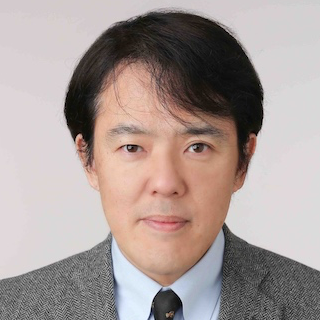

Invited Lectures
| Prof. Moti YungDr. Yi DengProf. Akira Otsuka |
| Prof. Moti Yung Snapchat Inc. & Columbia University, USA |
| BIO:Moti Yung is a Security and Privacy Scientist with Google, with main interests in Cryptography, Security, and Privacy. He graduated from Columbia University in 1988 and is an adjunct senior research faculty at Columbia till today. In parallel to Columbia he has had an industrial research career, working at places like IBM, RSA Labs. (EMC), Snap, and now Google. Yung is a fellow of ACM, of IEEE, of the International Association for Cryptologic Research (IACR) and the European Association for Theoretical Computer Science (EATCS). Among his awards are ACM's SIGSAC Outstanding Innovation Award in 2014, and 2018 IEEE Computer Society W. Wallace McDowell Award. His research covers broad areas: from the theory and foundations, to applied systems, and actual engineering efforts of cryptography, privacy, and secure systems. |
| Prof. Yi Deng Institute of Information Engineering, CAS |
| BIO: Yi Deng is a researcher at Institute of Information Engineering, CAS. He received his Ph.D in information Security from the State Key Lab. of Information Security, CAS in 2008. From 2009 to 2012, he was a research fellow at University College London and Nanyang Techinological University (Singapore). His research interests lie in cryptography, primarily in cryptographic protocols, including zero knowledge proofs and their applications to Fintech. He published papers in top venue in the theoretic computer science and cryptograhy, like FOCS, Eurocrypt, Asiacrypt, PKC. He received the Outstanding Youth Award in 2011, and Innovation Award in 2014，both from the Chinese Association for Cryptologic Research. In 2019, He received the First Prize of the Natural Science Award from Chinese Institute of Electronics. |
|  |
| Prof. Akira Otsuka Graduate School of Information Security, Institute of Information Security |
| BIO: Professor Akira Otsuka received B.E. and M.E. from Osaka University in 1989 and 1991 respectively, and Ph.D. degree from the University of Tokyo in 2002. From 2002, he was a Post Doctoral Fellow and a Cooperative Researcher at the University of Tokyo. From 2005, he was with National Institute of Advanced Industrial Science and Technology (AIST), serving as a Leader of Research Security Fundamentals during 2006 to 2010. During 2007 to 2014, he was a Visiting Professor at Research and Development Initiative, Chuo University. From 2020 to 2022, he is a visiting scholar at Institute for Monetary and Economic Studies, Bank of Japan. From 2017, he is a Professor at Graduate School of Information Security, Institute of Information Security. He is a senior member of IEICE and a member of IPSJ, JSAI, IFCA, IACR, and IEEE. |